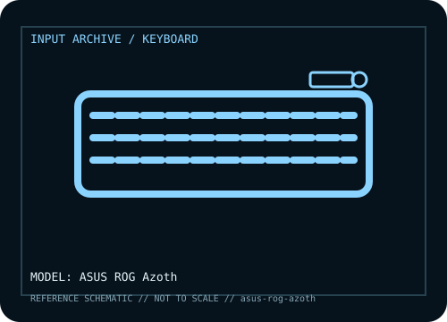

[ KEYBOARDS AND INTEGRATED POINTING DEVICES // IDENTIFIED COMPONENT ]
ASUS ROG Azoth
Premium 75% tri-mode mechanical keyboard combining a gasket-mounted hot-swap PCB, small OLED panel, three-way control knob, and ROG NX switch options.

MODEL IDENTIFICATION: ROG Azoth (original model; regional keyboard layout / switch SKUs vary). Verify the bottom label, regional SKU, receiver, and revision against the sources before repair or compatibility claims.
Model specifications
| Catalog subcategory | Keyboards and integrated pointing devices |
|---|---|
| Form factor / layout | 75% compact layout with function row, arrow cluster, navigation keys, and a rotary control; keycap legends and physical layout differ by region. |
| Key mechanism / controls | Hot-swappable ROG NX mechanical switch sockets; switch type is SKU-dependent. The gasket structure, layered dampening, OLED display, and three-way knob are identifying Azoth features. |
| Wired protocol | USB-C wired mode exposes standard keyboard input and supports wired configuration. Use the supplied cable or a data-capable USB-C cable; charge/data behavior can differ by connection and host. |
| Wireless protocol | 2.4 GHz RF through the included receiver or Bluetooth LE; receiver and Bluetooth are separate modes. Wireless response and advanced features depend on mode and configuration. |
| Host compatibility | USB keyboard input works with ordinary USB hosts; Bluetooth mode requires a host with compatible Bluetooth HID support. Windows is the main target for Armoury Crate configuration. Basic typing can work on other systems, but software features, OLED widgets, macro setup, and firmware tools may be unavailable. |
| Configuration / software | Armoury Crate is used for supported configuration, lighting, OLED content, macros, and updates. Preserve the original firmware and verify exact layout before any update. |
| Revision / service caveat | Do not conflate the original Azoth with Azoth Extreme or Azoth X; dimensions, display, switches, wireless generation, and feature set differ. Receiver-based 2.4 GHz operation is not Bluetooth. |
Preservation and service notes
Record the unit label, keyboard layout, switch option, cable or matched receiver, host OS, and test mode before troubleshooting. For wireless models, distinguish Bluetooth pairing from proprietary receiver operation; for wired models, verify that the USB connection carries data rather than power only.
Keep saved layouts and firmware with the exact model/revision. Disconnect power before switch or keycap service, use manufacturer-safe cleaning methods, and do not infer a unit’s configuration from a broad product-family name.
Manufacturer and independent references
- ASUS ROG — Azoth product pagePrimary manufacturer product reference for identifying this model and its stated feature set.
- ASUS ROG — Azoth downloads and supportAdditional manufacturer documentation or independent model-specific testing; consult the revision/region applicable to the physical unit.
Product pages and support resources can change. Preserve the applicable manual or page revision when documenting a particular keyboard.